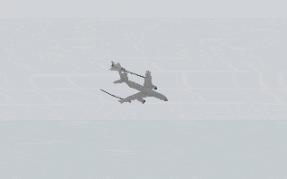
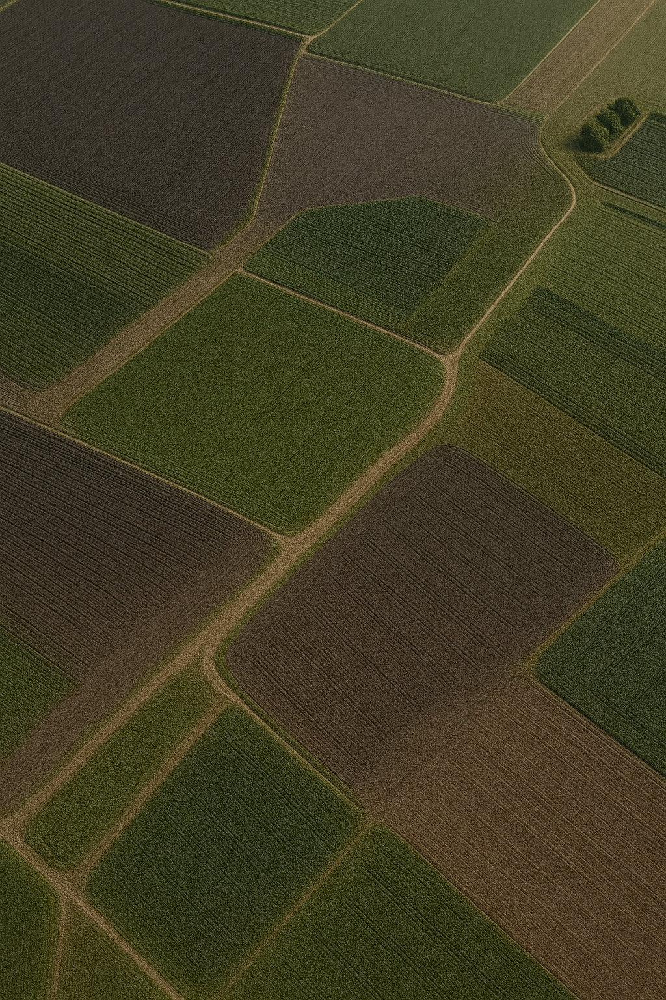
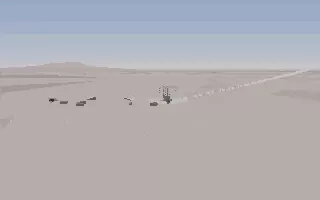
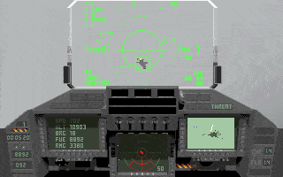
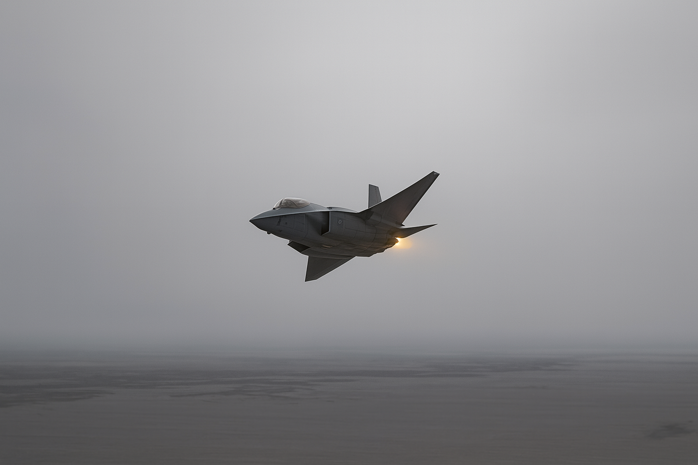

Gallery — Then & Now
Static previews with a subtle hover. Click any image to open in a lightbox.





A tribute to Digital Image Design’s 1993 classic — reimagined for 2025.
Released in 1993 by Digital Image Design and Ocean Software, TFX pushed the limits of PC hardware — real 3D environments, dynamic campaigns, and a cinematic camera — all on a 386 machine.
Non-commercial fan tribute. All trademarks belong to their respective owners.
Static previews with a subtle hover. Click any image to open in a lightbox.
Static previews with a subtle hover. Click any image to open in a lightbox.
TFX: Then & Now is a purely non-commercial fan tribute to the 1993 classic by Digital Image Design. The goal is to place original DOS-era scenes next to modern 2025 reinterpretations in a respectful, like-for-like way.
Image credits: original screenshots captured from the 1993 game, modern visuals are AI-assisted artwork guided and curated by the project author.